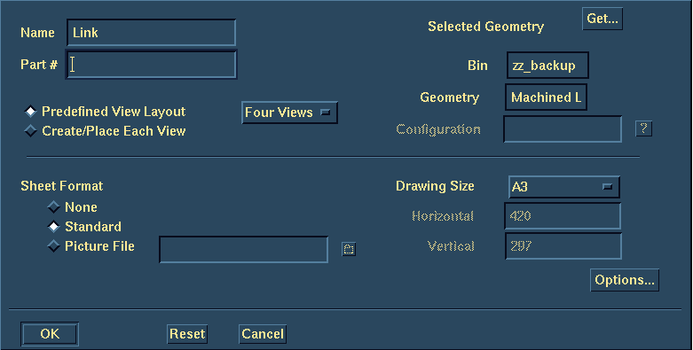
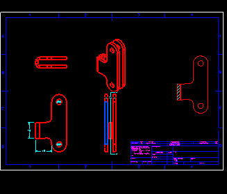

(Demonstrator 2)
| Next Step | Return to Table of Contents | Previous Step |

Create drawing
Four views
Standard sheet format
A3 drawing size

Change view
Select front surface of the Link
Yes accept this direction
Select the vertical edge of Link, ensure arrow is up
Done to accept this view
Yes to place the other views

Move
RMB
All
Slide the views over to the left and down to fit the isometric view in

Create a vertical Section View
Right View
OK to close form
Section curve down the center of the part
Accept view direction
Place view to the right of the drawing

| Next Step | Return to Table of Contents | Previous Step |